的无论怎样的正值，函数y有一个确定的不变的值．现在假定弧x为0，我们就有
的无论怎样的正值，函数y有一个确定的不变的值．现在假定弧x为0，我们就有163．利用前面提到的方法，与均匀热传导、立体内部的各种热运动有关的问题都可转化为纯分析问题，因此这部分物理学的进展将依赖于分析技巧所能取得的成果．我们已经熟知的微分方程包含这个理论的主要结果；它们以最一般最简单的方式表示数值分析与一类非常广泛的现象之间的必然联系；它们永远与自然哲学中最重要的分支之一数学科学联系起来．
现在还需要发现处理这些方程的恰当方法，以便得到它们的完全解以及简单地运用它们．下述问题提供了导出这样的解的第一个分析学例子；在我们看来，要指明我们所要遵循的方法的原理，这个例子是再恰当不过的了．
164．假定一个同质固体物质包含在两个竖直、平行和无界的平面B和C之间，并且由垂直于这两个平面的平面A分成两部分（图7）；我们进而考虑由三个无界平面A，B，C所界定的这个物体BAC的温度．假定这个无界固体的另一部分B'AC'是一个恒定热源，也就是说，每一点的温度都不会发生变化，都保持温度1.边界两侧的固体，一侧由平面C和平面A形成，另一侧由平面B和平面A形成，两侧所有点的温度都由于某种外部的原因而保持恒温0；最后，由A，B，C围成的固体分子具有初始温度0.热将连续地从热源A向固体BAC传导，并在那里无限地沿纵向传导，同时热还向冷物质B和C传导，它们将吸收大部分热．固体BAC的温度将会逐渐升高：但是不可能超过甚至达到一个最高温度，这个最高温度在不同点有所不同．我们需要确定变化的状态所不断逼近的终极以及稳定的状态．
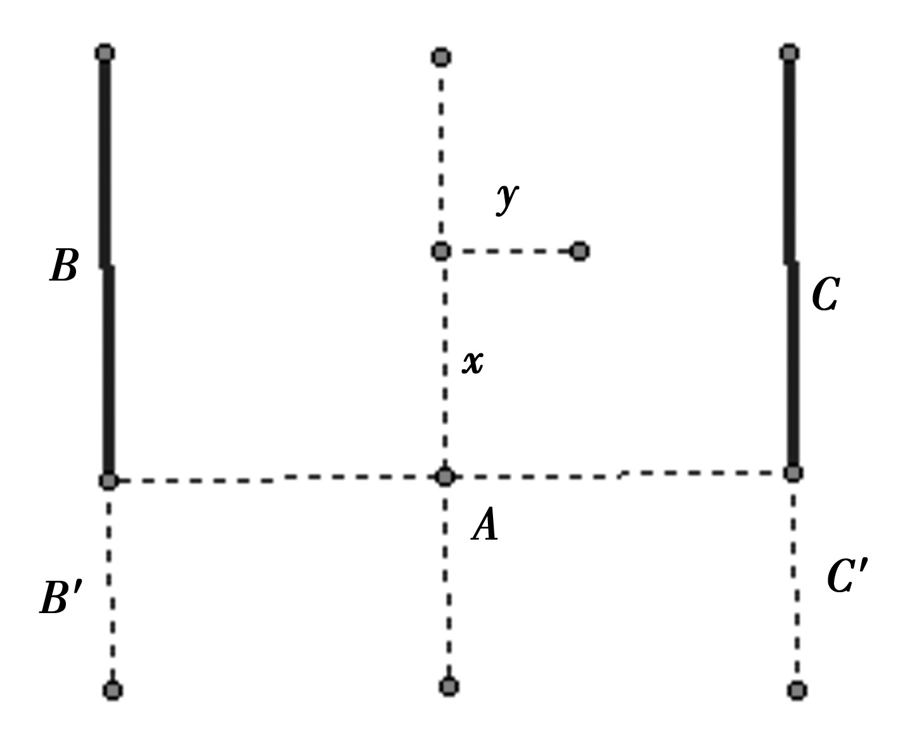
图7
如果这个终极状态已经形成，则它会维持下去，这是区别于其他状态的特征．因此实际问题在于确定由两个冰块B和C以及一种沸水物质A围成的无界矩形固体的永恒温度；对如此简单和基本问题的思考是发现自然规律最可靠的方式之一，从科学史上看，每一种理论都是以这种方式建立的．
165．为了更加简洁地表述这一问题，假定一个无限长的矩形薄片在基底A被加热，基底上所有点保持恒温1，垂直于基底A的两无穷边B和C上的每一点保持恒温0；我们需要确定这个薄片任一点的驻温．
假定在薄片的表面没有热量的散失，或同样的，我们考虑由无限个类似于前述薄片叠加而形成的固体：以直线Ax作为x轴，任一点m的坐标是x和y；最后，薄片的宽度A用2l表示，或者为了简化计算，用一个圆中直径与周长的比值π来表示．
设想固体薄片BAC的具有坐标为x和y的一点m的实际温度为v，如果基底A的每一点的温度都是1，边B和C每一点都保持温度0，则这些温度不会发生任何变化．
如果在每一点m处建立一个等于温度v的纵坐标，那么就形成一个曲面，这个曲面在薄片之上延展并延伸到无穷．我们试图找到这个曲面的性质，这个曲面经过了在y轴上方并与y轴相距为一个单位的直线，并且沿平行于x轴的两条无穷直线与水平面xy相交．
166．运用一般方程
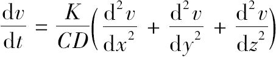
，在这个问题中，我们应当考虑排除z轴，因此项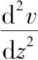
应当略去；因为我们希望确定驻温，所以首项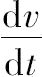
消失；因此，属于这个实际问题并确定所求曲面性质的方程是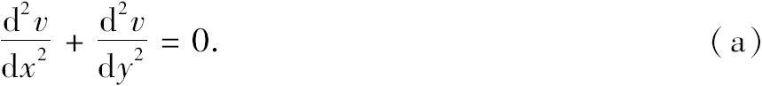
表示固体BAC永恒状态的关于x和y的函数φ（x，y）必须满足以下条件：第一，它满足方程（a）；第二，当y的取值为
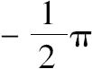
或时，不管x取什么值，它应当等于0；第三，当x=0并且y取到之间的任何值时它应当等于1.此外，因为所有的热都来自热源A，当我们给x一个很大的值时，这个函数φ（x，y）应当变得十分小．
167．为了在所适合的范围内考虑这个问题，我们首先要寻找满足方程（a）的有关x和y的最简函数；然后我们要使v值一般化以满足规定的所有条件．利用这种方法，这个解将得到所有可能的扩展，并且我们将会证明所提出的问题没有其他解．
当我们对其中一个或全部两个变量赋予无穷值时，具有两个变量的函数常常可化为不怎么复杂的表达式；我们可以在特殊情形下的代数函数中看到这一点，此时代数函数是关于x的函数与关于y函数的乘积．
我们将首先检查v值是否能够表示为这样一个乘积；由于函数v应该表示整个范围内的薄片的状态，因而也应该包括坐标为无穷的点的状态．这样我们记v=F（x）fy；在方程（a）中用f″（x）代替并表示
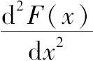
，用f″y代替并表示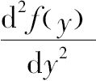
，则我们有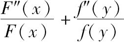
=0；然后我们假定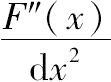
=m，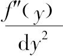
=-m，由于m是任一常数，为了求v的一个特殊值，我们从上述方程得到F（x）=e-mx，fy=cosmy.168．我们不可能假定m是一个负值，由于m是一个正值，我们必须排除诸如emx的项进入所有特殊的v值，因为当x是无穷大时，温度v不可能变为无穷．事实上，除了恒定热源A以外，没有热量的供应，仅仅有非常小的一部分热能够到达距离热源很遥远的这部分空间．剩余的热越来越多地向无穷边B和C转移，并且散失在包围它们的冷物质中．
进入函数e-mxcosmy中的指数m是不知道的，我们可以赋予这个指数任何正值：但是，不管x取什么值，当y取
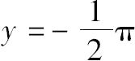
或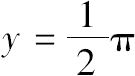
时，v值都为0，因此m必须取数列1，3，5，7，…中的某一项；通过这种方式第二个条件就满足了．169．把类似于上述项的一些项加起来就构成了一个更一般的v值，于是我们有
v=ae-xcosy+be-3xcos3y+ce-5xcos5y+de-7xcos7y+… （b）
显然，由ϕ（x，y）表示的函数v满足方程
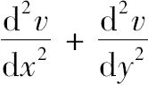
=0和条件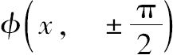
=0.第三个条件也需要满足，由于它由ϕ（0，y）=1表示，我们必须注意，当我们给y赋予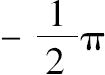
到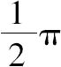
之间的任何值时这个结果必然成立．如果我们给y赋予从到区间之外的任何值，那么函数ϕ（0，y）的取值就没有意义．因此方程（b）必须满足以下条件1=acosy+bcos3y+ccos5y+dcos7y+….
数目无穷的系数a，b，c，d，…由上述方程来确定．
等式右边是一个关于y的函数，只要y的取值在到之间，则这个函数就等于1.有人或许会怀疑这样的一个函数是否存在，不过这个困难在随后会得到彻底解决．
170．在给出这些系数的计算之前，我们不妨关注方程（b）中每一项表示的意义．
假定基底A的固定温度不是在每一点处都等于1，而是随直线A上的点愈来愈远离中点而下降，各点的温度正比于该距离的余弦；在这种情况下很容易看到纵坐标表示温度v或ϕ（x，y）的曲面的性质．如果这个曲面在原点处被一个垂直于x轴的平面所截，那么截面边界的曲线方程是v=acosy；系数的值是
a=a，b=0，c=0，d=0，
等等，曲面的方程是v=ae-xcosy.
如果这个曲面被垂直于y轴的平面所截，则截线是凸面朝这个轴的对数螺线；如果与x轴垂直地截这个曲面，则截线是凹面朝x轴的三角曲线．
由此得到函数
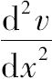
总是正值，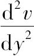
总是负值．现在一个分子所获得的热量因其位置在沿x方向的两个分子之间而与的值成正比（第123目）：由此可知，中间分子沿x轴方向从它前面的分子那里得到的热量要多于它传递给后面分子的热量．但是，如果这同一个分子被看作是处在沿y轴方向的其他两个分子之间，由于函数是负值，中间分子传递给它后面分子的热量要多于它从前面的分子那里得到的热．这样我们就可以得到，正如方程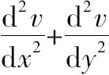
=0所表示的那样，它沿x轴方向得到的超出的热正好弥补了沿y轴方向散失的热．因此，热从热源A出发逃逸的线路就清楚了．热沿x轴方向传导，同时热被分解成两部分：一部分朝向边界，而另一部分继续远离原点，像前面那样再被分解，以至无穷．我们正在考虑的这个曲面由对应于基底A的三角曲线随与x轴垂直的平面沿该轴运动而成，它的每个纵坐标与同一分数的逐次幂成正比地无穷减少．如果基底A的固定温度由项bcos3y，或ccos5y，…来表示，那么我们可以得出类似的推断，运用这种方法我们就可以形成最一般情况下热运动的精确观点；因为稍后我们会看到运动往往由一些基本运动组合而成，这些基本运动中的每一个似乎是独立存在的．
171．现在需要确定方程1=acosy+bcos3y+ccos5y+dcos7y+…中的系数a，b，c，d，….为使这个方程成立，常数还必须满足通过逐次微分得到的方程；因此有结果
1=acosy+bcos3y+ccos5y+dcos7y+…，
0=asiny+3bsin3y+5csin5y+7dsin7y+…，
0=acosy+32bcos3y+52ccos5y+72dcos7y+…，
0=asiny+33bsin3y+53csin5y+73dsin7y+…，
等等以至无穷．
当y=0时这些方程必然成立，这样我们就有
1=a+b+c+d+e+f+g+…，
0=a+32b+52c+72d+92e+112f+…，
0=a+34b+54c+74d+94e+…，
0=a+36b+56c+76d+…，
0=a+38b+58c+…，
………………
这些方程的数量就像未知数a，b，c，d，e，…的数量一样是无穷的．问题在于只保留一个未知数而消去其他的．
172．为了对这些消元结果形成一个清晰的概念，起初我们假定未知数a，b，c，d，e，…的数目是有限的并且等于m.我们将只运用前m个方程，去掉前m项之后的包含未知数的所有项．如果依次让m等于2，3，4，5等，那么未知数的值将会在每一个这样的假设之下求得．例如，对于两个未知数的情况，量a将得到一个值，对于三个、四个或者是相继的多个未知数的情况，量a将得到其他值．未知数b也是这样，它将会得到与消元情形一样多的值；其他每一个未知数同样可以有无穷多个不同的值．对于未知数数目是无穷的情况，其中每一个未知数的值，就是通过逐次消元所得到的那些值所逼近的极限．这样，我们所要研究的是，随着未知数数目的增加，a，b，c，d，e，…的值是否收敛于它连续逼近的一个有限的极限．
假定运用以下6个方程
1=a+b+c+d+e+f+…，
0=a+32b+52c+72d+92e+112f+…，
0=a+34b+54c+74d+94e+114f+…，
0=a+36b+56c+76d+96e+116f+…，
0=a+38b+58c+78d+98e+118f+…，
0=a+310b+510c+710d+910e+1110f+….
不包括f的5个方程是
112=a（112-12）+b（112-32）+c（112-52）+d（112-72）+e（112-92），
0=a（112-12）+32b（112-32）+52c（112-52）+72d（112-72）+92e（112-92），
0=a（112-12）+34b（112-32）+54c（112-52）+74d（112-72）+94e（112-92），
0=a（112-12）+36b（112-32）+56c（112-52）+76d（112-72）+96e（112-92），
0=a（112-12）+38b（112-32）+58c（112-52）+78d（112-72）+98e（112-92）.
继续消元我们将获得关于a的最后的方程是
a（112-12）（92-12）（72-12）（52-12）（32-12）=112·92·72·52·32·12.
173．如果我们运用的方程多一个，为了确定a，我们会得到一个类似于前面的方程，等式左边多出了一个因子132-12，等式右边多出了一个新的因子132.a的这些不同值所遵循的规律是显而易见的，那么对应于无穷个方程的a值可表示为
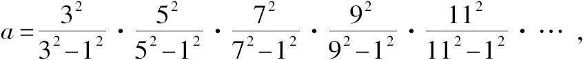
或者
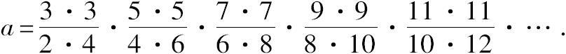
现在最后的表达式就清楚了，根据沃利斯（Wallis）定理，我们得到
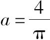
.接着只需要确定其他未知数的值．174．消去f后所剩下的五个方程可以与在假设只有五个未知数时所能运用的五个更简单的方程进行比较．后一种情形下的方程与172目中的方程不同，在172目的方程中，e，d，c，b，a被分别乘以因子
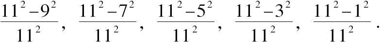
由此得到，如果我们已经求解了含有五个未知数的五个线性方程并计算出了每一个未知数的值，那么我们将容易推出对应于六个方程下的同名未知数的值．这只需要用已知因子乘以第一种情况下所得到的e，d，c，b，a.一般地，如果我们从一定数目的方程和未知数中求得未知数的一个值，那么容易把这个值转化为方程数和未知数个数都增加1个情形下的同一未知数的另一值．例如，如果五个方程五个未知数情形下的e值表示为E，那么在多一个未知数情形下同一个量的值就为
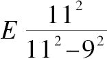
.在7个未知数的情形下，由于同样的原因，这个值就是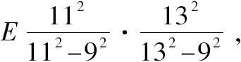
在8个未知数的情形下，它的值将会是
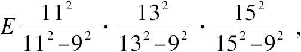
等等．以同样的方式就足以知道对应于两个未知数情形下的b值，就可以由此推出三个、四个、五个未知数等情形下的同一字母的值．我们只需要做的就是给第一个b值乘以
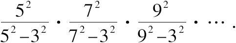
类似地，如果我们知道了三个未知数情形下的c值，我们就可以用连续因子
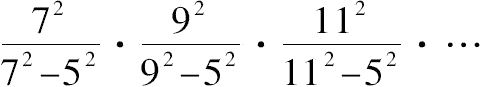
乘这个值．我们可以计算4个未知数情形下的d值，给计算所得的值乘以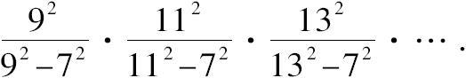
a值的计算服从同样的规则，因为如果确定了一个方程情形下的它的值，给这个值依次乘以
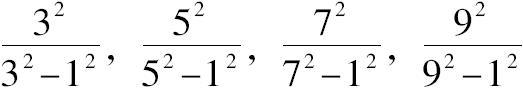
就得到这个量的最后的值．
175．因此问题简化为确定一个未知数情形下的a值，两个未知数情形下的b值，三个未知数情形下的c值以及其他情形下的别的未知数的值．
只观察这些方程而无需任何计算，我们容易得出，这些逐次消元的结果必定是
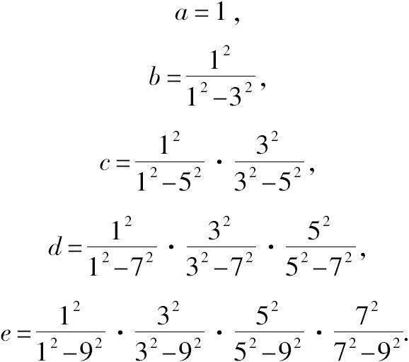
176．现在仅仅需要给上述各量乘以174目中已经给出的乘积的级数以使它们完整．因此我们会得到未知数a，b，c，d，e，f，…的最后的值，它们的表达式如下：
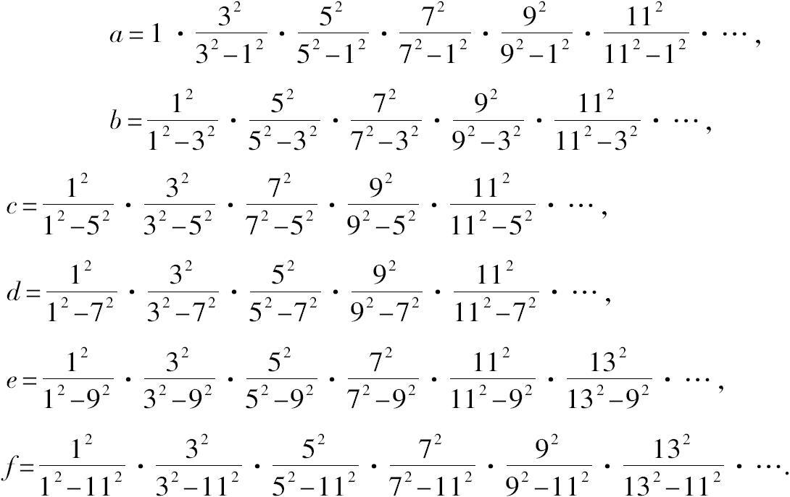
或
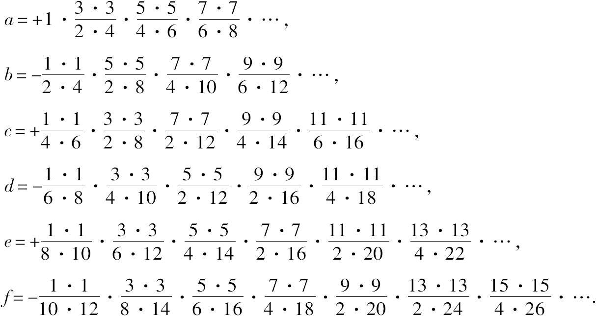
根据沃利斯（Wallis）定理，量
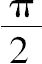
或圆周长的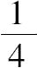
等于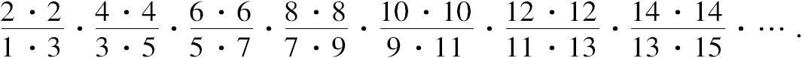
我们会观察到，在a，b，c，d，…的值中，要使它们的分子和分母成为完整的成对的奇数序列和偶数序列，还必须添加一些因子，我们发现应当添加的因子是：[1]
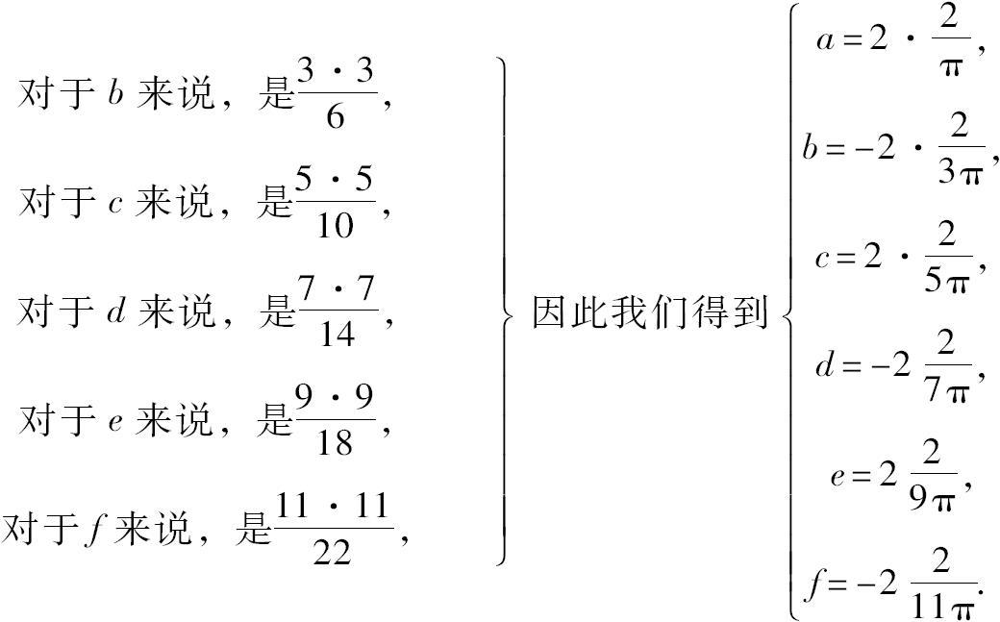
177．这样消元彻底完成了，方程
1=acosy+bcos3y+ccos5y+dcos7y+ecos9y+…
中的系数a，b，c，d，…确定下来了．
把这些系数带入方程就得到了如下方程：[2]
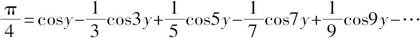
等式右边是关于y的一个函数，当y取
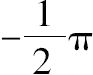
到 之间的任何值时这个函数值不会发生变化．容易证明这个级数总是收敛的，即以任意一个数代替y，并遵循这些系数的计算，我们都愈来愈趋近于一个固定的值，因此，这个值与所计算的项的和的差值变得小于任一给定的量．在此我们没有给出一个证明，这个证明读者可以给出，如果给y赋予0到
之间的任何值时这个函数值不会发生变化．容易证明这个级数总是收敛的，即以任意一个数代替y，并遵循这些系数的计算，我们都愈来愈趋近于一个固定的值，因此，这个值与所计算的项的和的差值变得小于任一给定的量．在此我们没有给出一个证明，这个证明读者可以给出，如果给y赋予0到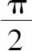
之间的一个值，我们会注意到，不断逼近的这个固定值就是 ，但是如果给y赋予到
，但是如果给y赋予到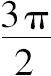
之间的一个值，这个固定值就是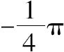
；因为当y的取值在第二个区间时，级数每一项的符号发生了变化．一般地，这个级数的极限交替为正和负；从其他方面考虑，这种收敛不能快得足以提供一种简便的逼近方式，不过它却足以使方程成立．178．取x为横坐标，y为纵坐标，方程
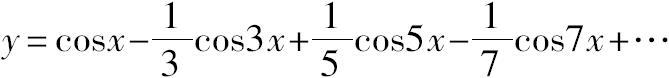
表示一条曲线，这条曲线是由平行于坐标轴并等于圆周长的分离的直线段构成的．这些平行线交替地位于轴的上方或下方，与轴相距，并由本身成为这条线的组成部分的垂线所连结．为了对这条线的性质形成一个准确的概念，首先应当假设函数
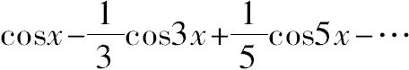
的项数是一个有限值．在后一种情况下，方程y=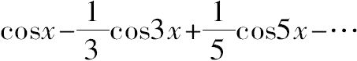
表示一条曲线，这条曲线交替地穿过轴的上方或下方，同时当x取0，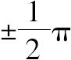
，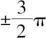
，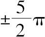
，…时与轴相交．随着方程项数的增加，所讨论的这条曲线愈来愈与前面提到的由平行直线段以及垂线段构成的曲线相一致；因此这条曲线是由逐次增加项数所得到的不同曲线的极限．179．我们可以从不同的观点考察这些方程，直接证明方程
x=0的情形被莱布尼茨级数
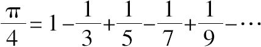
所验证．下一步我们将假设级数的项数不是无限而是有限并等于m.我们把这个有限级数的值看作是x和m的一个函数．我们用关于m的负指数幂来表示这个函数；我们就会发现，随着m变得越来越大，函数值越来越接近于一个常数而与x无关．
设y是所要求的函数，该函数由方程
给出，假定项数m是偶数．对x微分后的方程为
上述方程乘以2sin2x，我们就有
等式右边的每一项可以用两个余弦的差来替代，我们得到
等式右边简化为
cos（2m+1）x-cos（2m-1）x，或-2sin2mxsinx；
因此，
180．我们对等式右边分部积分，同时在这个积分中把应当逐次积分的因子sin2mxdx和应当逐次微分的因子或secx区别开；用sec'x，sec″x，sec"'x，…表示微分的结果，我们有
因此，y的值或关于x和m的函数
由一个无穷级数来表示；很显然，当m越来越大时，y的值越来越趋于一个常数．正因为这个原因，当m是无限时，不管x是小于的无论怎样的正值，函数y有一个确定的不变的值．现在假定弧x为0，我们就有
它等于.因此，一般地我们就有
181．如果在这个方程中我们假设，我们发现
给弧x其他特殊的值，我们就会发现其他的级数，不过写下这些级数没有什么用，有几个这样的级数已经在欧拉（Euler）的著作中发表了．如果我们用dx乘方程（b）并对它积分，我们就有
在上述方程中令，我们发现
它是一个已知级数．特殊情况可以无限列举；不过，通过遵循同样的过程，确定由多重弧的正弦与余弦所组成的不同级数的值，这更符合本书的目的．
182．设y=sinx-+-+…+-，
m为任一偶数．我们从这个方程得出
用2sinx乘以这个方程，并把等式右边的每一项用两个正弦的差值来代替，我们将会有
化简后可得
因此我们有，或者，我们得到
如果我们分部积分，同时区分应当逐次微分的因子或与应当逐次积分的因子，我们将形成一个级数，其中的幂进入分母．至于常数它等于0，因为y值从x的值开始．
由此得到，当项数很大时，有限级数
的值与的值相差无几；若项数无穷，则我们有已知方程
从最后的这个级数还可以推出已经给出过的值为 的级数．
的级数．
183．现在令
对上式微分再乘以2sin2x，代入余弦的差并化简，我们会得到
或者；通过分部积分上式右边的最后一项，并假定m无穷，我们就有y=.如果在方程y=中，我们假定x=0，我们发现y=；因此，.这样我们就得到了欧拉（Euler）曾给出的级数
184．对方程y=运用同样的过程就会得到从未被注意过的级数1.[3]
对于所有这些级数，我们应当注意到，只有当变量x包含在某一界限内时，由它们建立的方程才成立．因此，只有在变量x包含在给定的区间时，函数
才等于.级数也是这样．这个总是收敛的级数只要弧度x大于0而小于π，则它的值就等于.但如果弧度超过π，它的值就不等于，相反地与的差距很大；因为显然，从x=π到x=2π的区间内，这个函数以相反的符号取它在前面从x=0到x=π的区间所取的所有值．人们知道这个级数已很长时间了，但是发现这个级数的分析学并没有揭示为什么当变量超过π时这个结果不成立．
因此我们应当仔细地审视我们所要应用的这种方法，同时还应当寻找每个三角级数都有其成立范围的缘由．
185．为了实现这一点，我们只需要认识到以下事实就足够了，只有构成无穷级数的项的和的极限确定了，这个无穷级数的值才能精确地确定；因此，假如我们只考虑了这些级数的前几项，我们应当找到包含余项在内的界限．
我们把这个注记运用到方程
中．它的项数是偶数，用m表示；从上式可推出方程，因此我们可以由分部积分推出y的值．现在，由于u和v是x的函数，积分可以分解为一个级数，这个级数的项数想要多少就有多少．例如，我们可以写成
这是一个可通过微分来验证的方程．
用v表示sin2mx，u表示secx，我们会发现
186．现在需要确定使级数完整起来的包含积分的界限．为了形成这个积分，我们应当对弧x赋予从这个积分开始的下限0一直到这个弧的最后的值x的无数多个值；对于x的每一个值，都应当确定微分d（sec″x）的值以及因子cos2mx的值，同时还应当加上所有的部分积：现在，可变因子cos2mx必须是一个正或负的分数；因此，积分由微分d（sec″x）的值分别乘以这些分数后所得的可变值的和构成．当从x=0一直取到x时，这个积分的总值小于微分d（sec″x）的和，反过来取，则它比这个和要大：因为在第一种情形下，我们用常量1替代了可变因子cos2mx，在第二种情形下，用-1替代了可变因子：现在，微分d（sec″x）的和，或者同样的，从x=0开始的积分是sec″x-sec″0；sec″x是x的某个函数，sec″0是这个函数在弧x为0的假设下所取的值．
因此，所求的积分包含在+（sec″x-sec″0）和-（sec″x-sec″0）之间；也就是说，如果用k表示一个或正或负的未知分数，我们总有
这样我们就得到了方程
其中量准确地表示了这个无穷级数所有后面那些项的和．
187．如果我们只研究了两项，那么就应当有方程
由此得到，我们可以用与我们所期望的一样多的项去展开y，并且可以精确地表示级数的余项；由此我们得到一个方程组
方程中k值并不完全相同，它表示1到-1之间的某个量；m是级数
的项数，这个级数的和用y表示．
188．如果数m给定，并且不管这个数有多大，我们都可以像我们所期望的那样精确地确定y的可变部分，那么，我们就可以运用这些方程．如果数m像假设的那样是无穷的，我们仅仅需要考虑第一个方程；显然，常数后面的两项会变得越来越小；因此在这种情形下2y的精确值就是常数c；在y的值中假设x=0就可以得到这个常数，因此，我们可得

现在容易看到，如果弧度x小于，则结果必然成立．事实上，当对这个弧度赋予与 如我们所期望的那样接近的一个确定值X时，我们总可以找到一个充分大的m的值，使得这个级数完整的项小于任何一个量；不过这个结论的精确性基于项secx的取值不能超出所有可能界限的值这样一个事实，因此，同一推理不能运用到弧x不小于的情形．
如我们所期望的那样接近的一个确定值X时，我们总可以找到一个充分大的m的值，使得这个级数完整的项小于任何一个量；不过这个结论的精确性基于项secx的取值不能超出所有可能界限的值这样一个事实，因此，同一推理不能运用到弧x不小于的情形．
同样的分析可运用于表示和logcosx的值的级数上，通过这种方式我们能够确定变量的界限，以使分析结果不带任何的不确定性；此外，用建立在其他原理基础之上的另一种方法也可以解决同样的问题．
189．在一个固体薄片中的恒定温度规律的表达式以方程
为前提条件．获得这个方程的更简单的方法如下：
如果两个弧度的和等于，即圆周的，那么他们正切的乘积就是1；因此，一般地我们有
符号arctanu表示正切是u的弧长，给出那个弧的值的级数是已熟知的；因此我们有以下结果：
如果我们在方程（c）和方程（d）中用代替u，则我们有
和
方程（d）的这个级数总是发散的，方程（b）的级数（180目）总是收敛的，它的值是或 .
.
190．现在我们可以构造我们所提出问题的完全解了；由于方程（b）（169目）的系数已经确定，剩下就只是把它们代入而已，我们有
这个v值满足方程；当 或时，v值就变为0；最后，当x=0而y在到之间时，v值等于1.这样问题中的所有物理条件都完全满足了，毫无疑问，如果我们对薄片中的每一点都给予方程（α）所确定的温度，同时基底A保持温度1，无穷边B和C的温度保持0，那么这个系统的温度不会有任何变化．
或时，v值就变为0；最后，当x=0而y在到之间时，v值等于1.这样问题中的所有物理条件都完全满足了，毫无疑问，如果我们对薄片中的每一点都给予方程（α）所确定的温度，同时基底A保持温度1，无穷边B和C的温度保持0，那么这个系统的温度不会有任何变化．
191．方程（α）的右边具有极其收敛的级数形式，容易确定坐标x和y已知的点的温度值．这个解引出了各种值得注意的结果，因为它们也属于这个一般理论．
如果需考虑其固定温度的点m距离原点A非常遥远，方程（α）右边的值将非常接近于e-xcosy；如果x无穷，则它简化为这一项．
方程也表示一旦形成便保持不变的这个固体的一个状态；方程所表示的状态亦如此，一般地，级数中的每一项对应于一个具有同样性质的特殊的状态．所有这些局部系统存在于方程（α）所表示的系统中；它们被叠加，对应于这些状态的热运动发生了，就像它们单独存在一样．在与这些项的任一个相对应的这些状态中，基底A的各点的固定温度各不相同，但是由所有这些项的和所产生的一般状态满足这个特殊条件．
随着我们考虑其温度的点离原点愈远，热运动就愈不复杂：如果距离x足够大，级数的每一项对于它前面的项就非常小，对于薄片中距离原点越来越远的那些部分，加热薄片的状态明显地由前面三项、或两项、或仅仅一项来表示．
纵坐标衡量固定温度v的曲面是由具有方程
的大量特殊曲面的纵坐标相加构成的．
当x无穷时，这些方程中的第一个所表示的曲面与一般曲面重合，它们有一个共同的渐近面．
如果把它们纵坐标的差v-v1看作是一个曲面的纵坐标，当x是无穷时，这个曲面将会与方程表示的曲面重合．这个级数的其他项产生相似的结果．
如果在原点处的截面不是像实际假设中那样由平行于y轴的直线所围成，而是由两个对称部分构成的任一图形，那么会再一次得到同样的结果．因此，显然特殊值ae-xcosy，be-3xcos3y，ce-5xcos5y，…在物理问题中有它们的来源，它们与热现象有着必然的联系．它们中的每一个都表示一个简单的模式，热在无穷边保持固定温度的矩形薄片中按照这些模式建立和传导．这个一般的温度系统总是由大量的简单系统构成，它们和的表达式只有系数a，b，c，d…是任意的．
192．方程（α）可以用来确定在原点处加热的矩形薄片中的永恒热运动的所有情况．例如，如果有人问，热源的消耗如何，也就是说，在一个给定的时间内，穿过基底A并补偿流进冷物质B和C的热量是多少；我们认为垂直于y轴的热通量可表示为，因此，在dt时间内流过坐标轴dy部分的热量就是
并且温度是恒定的，单位时间内的热流量就是.为了获得穿过基底的全部热量，必须对从到积分，或者从y=0到积分，然后把积分的结果加倍．量是x和y的一个函数，为了使计算适合于与y轴重合的基底A，在这个函数中，x应当等于0.因此，热源消耗的表达式就是.这个积分应当从y=0到；如果在函数中，假定x不等于0，而是x=x，则这个积分是x的函数，它表示了单位时间内通过距原点为x处的一个横截边的热量．
193．如果我们希望确定单位时间内通过薄片上平行于边B和C的一条直线的热量，那么我们就运用表达式，并用线的微元dx乘以它，然后在这条线的给定界限内关于x积分；因此，积分表示了通过整条线段的热流量是多少；如果在这个积分之前或之后我们取，我们就可以确定在单位时间内从薄片通过无穷边界C逃逸的热量．接着我们可以对这个量和热源的消耗量进行比较；因为热源必须不断地提供流入物质B和C的热．如果这种补偿不是在每一时刻都存在，那么系统的温度会变化．
194．方程（α）给出
乘以dy，并从y=0积分，我们有
如果令，并对积分加倍，我们得到了在单位时间内，通过平行于基底并与基底相距为x的一条直线的热量的表达式
从方程（α）我们还可以推出
因此，从x=0所取的积分就是
如果从x为无穷时它所取的值中减去这个量，我们便得到
一旦使，我们就有经过从距离原点为x处的点直到薄片终点的无穷边C的总热量的一个表达式；即
显然，它等于同时通过薄片上距原点为x处所作的横截线的热量的一半．我们已经注意到这个结果是这个问题的条件所产生的必然结果；如果它不成立，那么这个薄片位于这条横截线以外并且延伸到无穷的部分，就不会接收到来自于基底的等于通过它的两边所散失的热量；因此它不能保持自己的状态，这与假设矛盾．
195．至于热源的消耗，在前面的表达式中假定x=0就可以发现；因此它呈一个无穷值的形式，如果注意到，根据假设，直线A的每一点的温度都是1并保持1，那么其原因就是显然的：与这个基底非常接近的平行直线的温度与1几乎没有差距．因此，和冷物质B和C毗邻的所有这些直线的端点向它们传递的热量比温度连续、逐步下降时要无比地大．在薄片开始的一部分中，在接近B和C的端点处，存在一个热瀑（a cataract of heat），或者一个无穷热流．当距离x变得明显时这个结果不成立．
196．曾经用π表示基底的长度．如果我们给它赋值2l，我们应当用代替y，给x的值也乘以，我们用代替x.用A表示基底的恒定温度，我们应当把v替换为.在方程（α）中作这些代换后，我们有
这个方程精确地表示了一个处于两块冰物质B和C之间并有恒定热源的无界矩形棱柱永恒的温度系统．
197．通过这个方程或171目容易看到，固体中的热传导，距离原点越远，得到的热量越多，同时它还指向了无界面B和C．平行于基底截面的每一个截面在每一时刻被恢复到同一强度的热波（a wave of heat）所横截：截面与原点的距离越大强度越弱．与无界平面平行的任一平面也有类似的热运动；每一个这样的平面被一个恒波（a constant wave）所横截，这个恒波把热传向两侧的物质．
如果我们不是非得要阐明一个其原理需要确定的全新的理论，那么前面的一些论述就不必要了．为此我们增加如下注记．
198．方程（α）中的每一项对应于一个特殊的温度系统，这些温度系统存在于一端受热，并且两条无穷边保持一个恒定温度的矩形薄片中．因此当基底A的点有固定温度cosy时，方程v=e-xcosy表示永恒温度．我们现在设想受热的薄片是沿各个方向无限延伸的一个平面的一部分，用x和y表示这个平面上任一点的坐标，用v表示该点的温度，我们可以对整个平面运用方程v=e-xcosy；通过这种方式，边B和C接收到了固定温度0；但是邻接部分BB和CC的温度则不同；它们接收并保持了较低的温度．基底A每一点的永恒温度用cosy表示，并且邻接部分AA具有较高的温度．如果我们建构一个曲面，使其纵坐标等于平面上每一点的永恒温度，并且假设有一经过或平行于直线A的垂直平面截这个曲面，那么截面构成的曲线就是三角曲线，这条三角曲线的纵坐标是关于余弦的无穷和周期级数．如果同一曲面被平行于x轴的垂直平面所截，那么截面所形成的曲线就是通过其全长的对数曲线．
199．由此可见这一分析怎样满足假定基底温度等于cosy，两边B和C的温度等于0的这两个条件．在我们表示这两个条件时，事实上我们是在解决以下问题：如果这个受热薄片构成一个无界平面的一部分，那么，为了使这个系统可以自我保持，并使得无界矩形的固定温度就是假设中给定的温度，平面上所有点的温度将会是怎样的呢？
我们在前面已经假设一些外部因素使矩形固体一个面的温度是1，其他两个面的温度是0.这个结果可以以不同的方式来表示；不过适合于这个研究的假定在于把这个棱柱看作是所有尺寸为无界的固体的一部分，以及确定了环绕这个立体物质的温度，因此，与这个曲面有关的两个条件总是可以保持的．
200．为了确定基底A保持温度1，两条无穷边保持温度0的矩形薄片的永恒温度系统，我们应该考虑从初始状态到问题中固定的目标状态温度所经历的变化．这样就可以确定时间取任何值时固体的变化状态，接着我们就可以假定时间是无穷的．
我们所采用的方法是不同的，这种方法更直接地通向最终状态的表达式，因为它的建立以这个状态的一个独特性质为基础．我们现在要表明，除了我们所提出的解以外，该问题不可能有其他解．证明由下述命题得出．
201．如果我们让一个无界矩形薄片的所有点的温度都由方程（α）表示，并且两边B和C保持温度0，而端点A受到一个热源的作用从而使线A上所有的点都保持温度1；那么这个固体的状态不会发生任何的变化．事实上，由于方程
被满足，所以显然（170目）决定每一个分子温度的热量既不会增加也不会减少．
同一固体中的不同点接收到了由方程（α）或v=ϕ（x，y）所表示的温度后，假定边A不是保持温度1，而是给定和直线B和C一样的固定温度0；那么保留在薄片ABC中的热将流过三条边A，B，C，根据假定，热不会得到补偿，因此温度将会连续下降，它们最终的共同值就是0.这个结果是显然的，因为根据建立方程（α）的方法，距离原点A无穷远的点就具有无穷小的温度．
如果温度系统是v=-ϕ（x，y）而不是v=ϕ（x，y），则在相反方向上会产生同样的结果．也就是说，初始负温度会不断发生变化，并且越来越趋向于最终温度0，同时三条边A，B，C保持温度0.
202．令v=f（x，y）是一个给定的方程，它表示基底A保持温度1同时B和C保持温度0的固体薄片BAC上各点的初始温度．
令v=F（x，y）是另一个给定的方程，它表示与前面一样的固体薄片BAC上各点的初始温度，只不过三条边B，A，C保持温度0.
假定在第一个固体中，继终极状态之后的变化状态由方程v=ϕ（x，y，t）确定，t表示历经的时间，方程v=Φ（x，y，t）确定第二个固体的变化状态，初始温度是F（x，y）．
最后假定和前两个相同的第三个固体：令方程v=f（x，y）+F（x，y）表示它的初始状态，令1是基底A的固定温度，0是两边B和C的温度．
我们继而表明，第三个固体的变化状态由方程v=ϕ（x，y，t）+Φ（x，y，t）确定．
事实上，第三个固体一点m的温度是变化的，因为体积是M的分子得到或失去一定的热量Δ，在dt时间内，温度的增量为，系数c表示相对于体积的比热．在第一个固体中同一点温度的变化量为，在第二个固体中是，字母和D表示分子通过与它所有邻近分子的作用而获得的正或负的热量．现在容易理解Δ等于d+D.对于这一点的证明只需考虑点m从或者属于薄片的内部、或者属于包围它的边界的另一点m'获得的热量就足够了．
用f1表示点m1的初始温度，在dt时间内，它传递给分子m的热量表示为q1（f1-f）dt，因子q1是关于两个分子之间距离的某一函数．因此，m获得的全部热量就是∑q1（f1-f）dt，符号∑表示所有项的和，这些项是考虑其他点m2，m3，m4…对m的作用时建立的；即用q2，f2或q3，f3或q4，f4等替换q1，f1．以同样的方式我们会发现在第二个固体中，点m获得的全部热量的表达式为∑q1（F1-F）dt；并且因子q1与项∑q1（f1-f）dt中的q1是相同的，因为两个固体是由同一种物质构成的，同时各个点的位置都是相同的；接着我们有
d=∑q1（f1-f）dt和D=∑q1（F1-F）dt.
同样的，我们会发现
Δ=∑q1[f1+F1-（f+F）]dt；
因此，Δ=d+D且.
由以上分析可知，第三个固体中的分子m在dt时间内获得的温度的增量等于前两个固体中同样点上所获增量的和．因此，在第一个时刻末，初始假设仍然成立，因为第三个固体中的任一分子的温度等于其他两个固体中任一分子温度的和．因此，这同一关系在每一时刻开始时都存在，即第三个固体的变化状态总能够用方程v=ϕ（x，y，t）+Φ（x，y，t）表示．
203．上述命题可应用于与均匀的或变化的热运动有关的一切问题．它表明，这个运动总可以分解为几个别的运动，其中每一个都分别起作用，就像它们单独存在一样．这种简单结果的叠加是热理论的基本原理之一．在本研究中，我们正是用一般方程的性质来表示它，并根据热传导原理推出其根源．
现在设v=ϕ（x，y）是方程（α），它表示基底A受热，边B和C保持温度0的固体薄片BAC上各点的永恒状态；根据假设，薄片的初始状态是这样的，除了基底A上的点的温度是1以外，所有其他点的温度都是0．接着我们可以把初始状态看作是由两个其他状态构成的：在第一个状态中，初始温度是-ϕ（x，y），三条边保持温度0，在第二个状态中，初始温度是ϕ（x，y），边B和C保持温度0，同时基底A温度是1；这两个状态的叠加就产生了来源于假设的初始状态．接下来仅仅需要考虑这两个部分状态中的热运动．现在，在第二个状态中，温度系统不可能经历任何变化；在第一个状态中，温度连续变化最终达到0，在201目中已经谈到过这一点．因此，严格意义上的终极状态是由方程v=ϕ（x，y）或（α）表示．
如果这个状态一开始就形成，那么它将自我保持，并且它就是我们用以确定这个状态的性质．如果我们假定这个固体薄片处在另一个状态中，那么后一状态与固定状态的差形成一个逐步消失的部分状态．
204．由此我们意识到最终的状态是唯一的；因为，若设想第二个状态，则第二个和第一个的差形成一个能够自我保持的部分状态，尽管边B，A，C保持温度0.现在，这个最后效应不可能发生．如果我们假定另一个热源独立于产生热流的热源A；此外，这个假设不是我们已处理过问题的假设，在这个问题中，初始温度为0．显然距离原点很远的部分仅仅能够获得一个极小的温度．
因为需要确定的最终状态是唯一的，由此得到，所提出的问题除了从方程（α）得到的解别无他解．可以给出这个结果的另一形式，不过我们既不可能扩大也不可能缩小这个解而不改变它的精确性．
在本章中我们已解释过的方法在于得出符合方程的简单的特殊值，并使解更加一般化，从而使v或者ϕ（x，y）可以满足三个条件：
显然，我们也可以按相反的次序进行，所得到的解必然和前面的一样．我们不准备停下来讨论细节，一旦得到解，这些细节容易补充．我们只在下节为函数ϕx，y给出一个值得注意的表达式，这个函数的值在方程（α）中以一个收敛级数展开．
205．上述方程可以由方程[4]的积分得到，该方程的任意函数符号内包含有虚量．在此我们只注意积分
与方程所给定的值v有一个明显的关系．
事实上，用余弦的虚数的表达式来代替余弦，我们就有
第一个级数是的函数，第二个级数是的相同函数．
比较这些级数与z的反正切函数中arctanz的已知展开式，我们立刻发现第一个级数就是，第二个级数就是；方程（α）就呈现出了有限形式
这个形式与通积分
相一致，函数ϕ（z）是arctane-x，函数ψ（z）类似．
如果在方程（B）中我们用p表示方程右边的第一项，用q表示第二项，我们就有
因此，tan（p+q）或；
于是我们得到方程. （C）
这是能够表述该问题解的最简形式．
206．v或ϕ（x，y）的值满足与固体边界相关的条件，即=0，以及ϕ（0，y）=1；它也满足一般方程=0，因为方程（C）是方程（B）的一个变换．因此，它确切地表示了永恒的温度系统；因为状态是唯一的，所以不可能有更一般的或更严格的其他任何解．
当未知数x，y，z中有两个给定时，通过表格，方程（C）会提供另一个未知数的值；它清晰地揭示了曲面的性质，这个曲面的纵坐标表示固体薄片上一个给定点的永恒温度．最后，我们从同一方程得出了微分系数，的值，它们度量了在两个垂直方向上的热流速度；因而我们知道了在其他任何方向上的热流值．
由此，这两个系数表示为
我们注意到，在194目中，，的值由无穷级数给出，把其中的三角量用虚数幂替代后就容易找到这些级数的和．这样我们就得到了刚刚所陈述的，的值．
我们现在解决的问题是我们在热理论中或更准确地说是在需要分析学的那部分热理论中所解决的第一个问题．不管我们利用了三角表还是收敛级数，它都提供很简单的数值应用，它精确地表示了热运动的一切情况．我们现在转到更一般的考虑上来．
207．热在矩形固体中的传导问题导出了方程=0；如果假定这个固体的某个面上的所有点具有共同的温度，级数
acosx+bcos3x+ccos5x+dcos7x+…
的系数a，b，c，d，…就可以确定了，那么，只要弧x包含在和之间，这个函数的值就是一个常数．这些系数的值刚刚已经确定；但我们在这里只是处理了一个更一般问题的个别情形，这个更一般的问题在于把任意函数展为多重弧的正弦或余弦的无穷级数．该问题与偏微分方程理论相联系，自这种分析学产生以来，人们一直在试图解决它．为了对热传导方程进行积分，我们有必要解决它；我们现在开始解释这个解．
首先，我们只研究把一个函数化为多重弧的正弦级数的情况，这个函数的展开式中仅仅包含有变量的奇次幂．把这样一个函数表示为ϕ（x），我们设方程为
ϕ（x）=asinx+bsin2x+csin3x+dsin4x+…，
在方程中需要确定系数a，b，c，d，…的值．首先，我们把方程写为
其中，ϕ'（0），ϕ″（0），，ϕ（4）（0），…表示系数
在假定x=0时所取的值．这样，以x幂的形式重新表示这个方程可得
我们有
如果我们比较上述方程与方程
ϕ（x）=asinx+bsin2x+csin3x+dsin4x+…，
并以x的幂展开右边，我们有方程
这些方程用来求出数目无穷的系数a，b，c，d，e，…．为了确定它们，我们首先认为未知数的数目是有限的且等于m；因此，我们删去前m个方程之后的方程，并且在每一个方程中删去右边前m项之后的所有项．由于总数m被给定，系数a，b，c，d，e，…的固定值可以通过消元找到．如果方程和未知数的数目逐一增大，同一个量会得到不同的值．因此，当我们增加用以确定未知数值的方程数量与未知数数量时，未知数的值会变化．需要确定当方程的数量增加时，未知数的值不断地收敛所趋向的极限．当方程的数量无穷时，这些极限是满足上述方程的真正值．
208．接着我们依次考虑这样一些情形，在这些情形中，我们不得不用一个方程确定一个未知数，两个方程确定两个未知数，三个方程确定三个未知数，等等．
系数的值必定与从中导出的那些方程类似，我们假定不同的方程组表示如下：
如果我们现在用包含A5，B5，C5，D5，E5，…的5个方程消去未知数e5，我们发现
在前面由四个方程组成的方程组中，用
并用
我们就可以从中导出上面这四个方程．
利用类似的代换我们总可以从对应于m个未知数的情形过渡到对应于m+1个未知数的情形．依次写出对应于这些情形中某一种的各个量之间的关系，和对于对应于随后那种情形的各个量之间的关系，我们有
a1=a2（22-1），
a2=a3（32-1），b2=b3（32-22），
a3=a4（42-1），b3=b4（42-22），c3=c4（42-32），
a4=a5（52-1），b4=b5（52-22），c4=c5（52-32），d4=d5（52-42），
a5=a6（62-1），b5=b6（62-22），c5=c6（62-32），d5=d6（62-42），
e5=e6（62-52），
…… （c）
我们还有
A1=22A2-B2，
A2=32A3-B3，B2=32B3-C3，
A3=42A4-B4，B3=42B4-C4，C3=42C4-D4，
A4=52A5-B5，B4=52B5-C5，C4=52C5-D5，D4=52D5-E5，
…… （d）[5]
从方程（c）我们得到，一旦用a，b，c，d…表示其数目无限的这些未知数，我们就有
209．接着就需要确定a1，b2，c3，d4，e5，…的值；第一个由A1进入其中的一个方程来确定；第二个由A2B2进入其中的两个方程来确定；第三个由A3B3C3进入其中的三个方程来确定等．因此，如果我们知道了A1，A2B2，A3B3C3，A4B4C4D4，…的值，我们就能够通过求解一个方程找到a1，求解两个方程找到a2b2，求解三个方程找到a3b3c3等．在此之后我们就可以确定a，b，c，d，e….接下来需要通过方程（d）计算A1，A2B2，A3B3C3，A4B4C4D4，…的值．第一，我们根据A2B2找到A1的值；第二，通过两个代换，我们根据A3B3C3找到A1的值；第三，通过三个代换，我们根据A4B4C4D4找到同一个A1的值等．A1的逐个值是
A1=A222-B2，
A1=A322·32-B3（22+32）+C3，
A1=A422·32·42-B4（22·32+22·42+32·42）+C4（22+32+42）-D4，
A1=A522·32·42·52-B5（22·32·42+22·32·52+22·42·52+32·42·52）
+C5（22·32+22·42+22·52+32·42+32·52+42·52）
-D5（22+32+42+52）+E5，…，
其中的规律很容易发现．我们希望确定的是这些值的最后一个，它包含了量具有无穷下标的A，B，C，D，E…，这些量是已知的，它们和进入方程（a）的那些量相同．
用无穷乘积22·32·42·52·62…除以A1的最终值，我们就有
这些数值系数是分数去掉第一个分数后的不同组合所形成的积的和．如果我们把这些乘积的和分别表示为P1，Q1，R1，S1，T1，…，并且如果我们运用方程（e）与（b）中的第一个方程，那么为了表示第一个系数a的值，我们就有方程
正如我们将要在下面看到的，现在容易确定量P1，Q1，R1，S1，T1，…的值；因此，第一个系数a就完全已知了．
210．现在我们接着研究系数b，c，d，e…，它们由方程（e）中的b2，c3，d4，e5，…确定．为此，我们运用方程（b），已经运用第一个方程找到了a1的值，接下来的两个方程会给出b2的值，三个方程会给出c3的值，四个方程会给出d4的值等等．
一旦完成计算，通过对方程的简单观察就可以得到b2，c3，d4，…值的如下结果
2b2（12-22）=A212-B2，
3c3（12-32）（22-32）=A312·22-B3（12+22）+C3，
4d4（12-42）（22-42）（32-42）
=A412·22·32-B4（12·22+12·32+22·32）+C4（12+22+32）-D4，
……….
很容易找到这些方程所服从的规律；剩下的只是确定量A2B2，A3B3C3，A4B4C4D4，…．
现在量A2B2可以用A3B3C3来表示，后者可以用A4B4C4D4来表示．为此只需实施方程（d）所表示的代换就足够了；逐次代换把上述方程的右边化为只含有无穷下标的ABCD…的表达式，也就是说，已知量ABCD…进入了方程（a）；这些系数变成由1，2，3，4，5…直至无穷的这些数的平方组合而成的不同积．我们只需注意，这些数的平方中的第一个12不会进入系数a1的值中；第二个22不会进入系数b2的值中；第三个32将不会出现在那些只用来形成c3的值的系数中；如此类推，以至无穷．对于b2c3d4e5…的值，因而对于bcde…的值，我们得到了与我们在前面已经找到的系数a1的值完全类似的结果．
211．现在如果我们用P2，Q2，R2，S2，…分别表示量
这些量是由以至于无穷的分数的组合形成的，为了确定b2的值，在这些分数中删掉，我们就有方程
一般地，我们用Pn，Qn，Rn，Sn…表示一些乘积的和，这些乘积是由，以至于无穷并仅仅删去的这些分数的组合得到；通常为了确定量a1，b2，c3，d4，e5，…，我们有方程
212．如果我们现在考虑给出系数a，b，c，d…的值的方程（e），那么我们就有结果
只要注意一下使分子和分母构成完整的双重自然数序列所需要的因子，我们就会看到，第一个方程中的分式约简为；第二个方程中的分式约简为；第三个方程中的分式约简为；第四个方程中的分式约简为；因此，与a，2b，3c，4d…相乘的这些积，交替地是和．现在仅仅需要找到P1Q1R1S1，P2Q2R2S2，P3Q3R3S3，…的值．
为了获得这些值，我们应当注意到，我们可以使这些值依赖于量PQRST…的值，而它们是由分数不删去任何一个而构成的不同的积．
对于上面这些积，它们的值由正弦展开式中的级数给出，我们用P，Q，R，S，T，…分别表示由分数不删去任何一个而组成的不同的积．对于上面这些积，它们的值由表示正弦展开式的级数给出，因此我们用P，Q，R，S，…表示级数
级数sinx=提供了量P，Q，R，S，T，…的值．事实上，正弦的值可以由方程
表示．我们有
因此我们马上会得到
213．现在假定Pn，Qn，Rn，Sn…表示由删去的这些分数组合而成的积的和，n为任一整数；需要通过P，Q，R，S，T…来确定Pn，Qn，Rn，Sn…．如果我们用1-qPn+q2Qn-q3Rn+q4Sn-…表示因子的乘积
在这些因子的乘积中，只有因子被删去了；由此可知，只要用乘以量1-qPn+q2Qn-q3Rn+q4Sn-…，我们就得到
1-qP+q2Q-q3R+q4S-….
这个比较给出了以下关系：
或
运用P，Q，R，S，…的已知值并相继地让n等于1，2，3，4，5…，我们将会得到P1，Q1，R1，S1…的值；P2，Q2，R2，S2…的值；P3，Q3，R3，S3…的值．
214．由上述理论得到，从方程
a+2b+3c+4d+5e+…=A，
a+23b+33c+43d+53e+…=B，
a+25b+35c+45d+55e+…=C，
a+27b+37c+47d+57e+…=D，
a+29b+39c+49d+59e+…=E
………………
中推出的a，b，c，d，e，…的值可表示为
215．知道了a，b，c，d，e…的值后我们就可以在所提出的方程
ϕ（x）=asinx+bsin2x+csin3x+dsin4x+esin5x+…
中代入它们，并用ϕ'（0），，ϕ（5）（0），ϕ（7）（0），ϕ（9）（0），…分别代替A，B，C，D，E…的值，我们就有一般方程
利用上述级数我们可以把其展开式中只含变量奇次幂的任意函数化为多重弧的正弦级数．
216．出现的第一种情形是ϕ（x）=x的情形；我们接着发现ϕ'（0）=1，=0，ϕ（5）（0）=0，…其余的也是这样．因此我们就有了欧拉曾经给出的级数
如果假定所要考虑的函数为x3，我们会有
ϕ'（0）=0，，ϕ（5）（0）=0，ϕ（7）（0）=0，…
它们给出方程
从上面方程出发，我们将得到同样的结果．
事实上，用dx乘以方程两边并积分，我们就有
常数C的值是；这个级数的和为.在方程
的两边乘以dx并积分就有
现在如果我们把x的值用方程
中得出的x值代替，我们将会获得与上面一样的方程，即
我们可以以同样的方式得到幂x5，x7，x9，…的多重弧的级数展式，一般地，可以得到其展开式只含变量奇次幂的每一个函数的多重弧的级数展式．
217．我们可以把方程A（215目）置于一个现在可以指明的更简单的形式中．我们首先应当注意到，sinx的系数的一部分是级数
它表示.事实上，一般地，我们有
现在，根据假设，函数ϕ（x）只包含奇次幂，我们必须使ϕ（0）=0，ϕ″（0）=0，ϕ（4）（0）=0，等等．因此，
sinx的系数的第二部分就是级数
乘以，而这个级数的值就是．我们可以用这种方式确定sinx系数的不同部分，以及sin2x，sin3x，sin4x，…的系数构成．为此，我们可以运用方程：
通过这些化简，方程（A）呈现以下形式：
或者
218．每当我们不得不把一个所要考虑的函数展为多重弧的正弦级数时，我们就可以运用这两个公式中的一个或另一个．例如，如果所要考虑的函数是ex-e-x，它的展式只包含x的奇次幂，我们应有
整理sinx，sin2x，sin3x，sin4x，…的系数，并把用它的值替代，我们有
我们应当扩展这些应用，从它们中推导出几个值得注意的级数．我们选取上面这个例子是因为它出现在与热传导有关的几个问题中．
219．到目前为止，我们假定以多重弧的正弦级数展开的函数能够按照变量x的幂展开，而且展开式中仅仅有奇次幂．我们可以把这一结果扩展到任意函数，甚至是不连续的以及完全任意的函数．为了清晰地证实这个命题的正确性，我们应当采用建立方程（B）的分析，并且检查乘以sinx，sin2x，sin3x，…的系数的本质．用s表示当n为奇数时，乘以的那个量，以及当n为偶数时，乘以的那个量，我们有
把s看作是π的函数，把它微分两次，并比较这些结果，我们发现=ϕ（π）；这是s的上述值应当满足的一个方程．
现在，把s看作是x的函数，方程=ϕ（x）的积分是
如果n是一个整数，x的值等于π，我们有s=．当n是奇数时选择符号+，当n是偶数时选择符号-．得到积分以后我们必须使x等于半圆周π；考虑到函数ϕ（x）只包含x的奇次幂，并从x=0到x=π取积分，利用分部积分，则可以用项的展开式来证实这个结果．
我们立刻得到该项等于
如果我们在方程（B）中代入的值，同时当这个方程的这一项是奇序号时取符号+，偶序号时取-，一般地我们就有了sinnx的系数；以这种方式我们得到了一个非常令人值得关注的结果，这个结果用方程
表示．如果从x=0到x=π取积分，那么上式右边总是给出了ϕ（x）所需要的展开式．[6]
220．由此我们认识到，进入方程
并在以前通过逐次消元发现的系数a，b，c，d，e，f，…是一系列定积分的值，这些定积分由一般项表示，i是所要确定系数的项数．这个注记是重要的，因为它表明了即使是完全任意的函数，如何把它展为多重弧的正弦级数．事实上，如果函数ϕ（x）表示横坐标从x=0扩展到x=π时任一曲线的纵坐标，同时在这个轴的同一部分构造其坐标是y=sinx的已知的三角曲线，那么不难表示任一积分项的值．我们必须假定，对于对应于ϕ（x）的一个值和sinx的一个值的每一个横坐标x，我们用第一个值乘第二个值，并在同一点作一个等于ϕ（x）sinx乘积的纵坐标．通过这种连续的操作就形成了第三条曲线，它的纵坐标是一条三角曲线的纵坐标，这条三角曲线被表示ϕ（x）的任意曲线的纵坐标成比例的压缩．因此，从x=0到x=π的压缩曲线的面积给出了sinx系数的精确值；并且无论对应于ϕ（x）的给定曲线是怎样的，不管我们是否能给出解析方程，不管它是否依赖于固定的规律，显然，它总是以任意方式压缩这条三角曲线；因此，在所有可能的情形中，这条压缩曲线的面积具有定值，它就是函数展开式中sinx系数的值．接下来的系数b或的情形亦如此．
一般地，为了构建系数a，b，c，d，…的值，我们应当设想方程是
y=sinx，y=sin2x，y=sin3x，y=sin4x，…
的曲线在x轴的同一区间，即从x=0到x=π上延伸；接着我们通过给它们的纵坐标乘以方程是ϕ（x）的曲线的相应纵坐标来改变这些曲线．压缩曲线的方程就是
y=sinxϕ（x），y=sin2xϕ（x），y=sin3xϕ（x），….
从x=0到x=π的上述曲线的面积就是方程
中系数a，b，c，d，…的值．
221．我们也能够通过直接确定方程
ϕ（x）=a1sinx+a2sin2x+a3sin3x+…+ajsinjx+…
中的量a1，a2，a3，…aj，…证明上述方程（D）（219目）；为此，我们给上述方程中的每一项乘以sinixdx，i是一个整数，并且从x=0到x=π进行积分，因此，我们有
现在不难证明，首先，方程右边的所有积分，仅仅除了项外，其余均为0；其次，的值等于；因此我们得到ai的值为
整个问题被简化为考虑进入方程右边的积分的值，被简化为证明前面两个命题．从x=0到x=π的的值是
其中i，j是整数．
因为这个积分必须从x=0开始，所以常数C等于0，由于i，j是整数，当x=π时这个积分值就为0；因此，像，，的每一项都等于0，并且当数i和j不相同时就会出现这个结果．数i和j相同时的情形则不同，因为简化成的积分变成了，其值为π．因此，我们有；这样我们以一种非常简单的方式获得了a1，a2，a3，…，ai，…的值，即
代入这些值我们就有
222．最简单的情形就是对于包含在0到π之间的变量x的所有值，给定函数是一个常数值；在这种情形中，若i是奇数，等于，若i是偶数，等于0．因此我们推出在以前曾经得到过的方程
应当注意的是，当一个函数ϕ（x）被展开为多重弧的一个正弦级数时，只要变量x的值在0到π之间，级数
asinx+bsin2x+csin3x+dsin4x+…
的值和函数ϕ（x）的值是一样的；但是当x的值超过数π时，这个等式一般不成立．
假设所要展开的函数是x，根据前面的定理，我们有
积分等于；与积分符号有关的指标0和π表明了积分的界限；当i是奇数时，应当选择符号+，当i是偶数时，应当选择符号-．那么我们就有以下方程
223．我们也可以把那些有别于只有变量的奇数幂进入其中的函数展开为多重弧的正弦级数．为了以一个毫无疑问的例子说明这个展开式的可能性，我们选择函数cosx，它只包含了x的偶次幂，它可以展开成如下形式：
asinx+bsin2x+csin3x+dsin4x+esin5x…，
尽管在这个级数中仅仅有变量的奇次幂进入．
事实上，根据前面的定理，我们就有
当i为奇数时，积分等于0，当i为一个偶数时，它等于．依次取定i=2，4，6，8，…，我们总是有收敛级数
或
这个结果是值得注意的，它表明余弦的展开式是一系列函数，这些函数中的每一个只包含奇次幂．如果上述方程中的x等于，我们发现
这个级数是已知的［《无穷小分析引论》（Introd.ad analysin.Infinit），第10章］．
224．利用相似的分析可以把任何函数展开为多重弧的余弦级数．
令ϕ（x）是需要展开的函数，我们可以写为
ϕ（x）=a0cos0x+a1cosx+a2cos2x+a3cos3x+…+aicosix+…. （m）
如果方程两边乘以cosjx，等式右边的每一项从x=0到x=π积分；很容易看到，除已经包含cosjx的项以外，这个积分的值为0．这个注记立即给出系数aj；一般地，考虑从x=0到x=π的的值就够了，假设j，i是整数．我们有
当j和i是两个不同的数时，从x=0到x=π的这个积分显然消失了．当两个数相同时，情况就不是这样．最后一项就变成，当弧度x等于π时，它的值就是．接着如果我们在方程（m）的两边乘以cosix，并从0到π进行积分，我们有
它是表示系数ai值的一个方程．
为了找到第一个系数a0，我们注意到，如果i=0，且j=0，那么积分
的每一项变成，每一项的值就是 ；当j和i不同时，从x=0到x=π的积分就是0；当j和i相同但不等于0时，它的值等于；当j和i每一个都等于0时，它等于π；这样我们获得了以下方程[7]
；当j和i不同时，从x=0到x=π的积分就是0；当j和i相同但不等于0时，它的值等于；当j和i每一个都等于0时，它等于π；这样我们获得了以下方程[7]
这个定理以及前面的定理适合于所有可能的函数，不管它们的性质是否能够用已知的分析方法来表示，不管它们是否对应于任意画出的一条曲线．
225．如果要把变量x本身展开为多重弧的余弦；我们可以写出方程
为了确定任意一个系数ai，我们有方程．当i是偶数时，这个积分就是0，当i是奇数时，它等于．同时我们有因此，我们形成以下级数
这里我们可以注意到，我得到了关于x的三个不同的展开式，即
必须注意，的这三个值不应当看作是相等的；对于x的一切可能的值，上述三个展式只有当变量x在0到之间时，它们才有一个共同的值．作出这三个级数所表示函数值的图，并比较表示这些级数的曲线，这些曲线表明这些函数的值明显地交错重合和发散．
为了给出把一个函数展为多重弧的余弦级数的第二个例子，我们选择函数sinx，它仅仅包含了变量的奇次幂，我们假设它可以展成以下形式
a+bcosx+ccos2x+dcos3x+…
在这种特殊情形下运用一般方程，作为所需要的方程，我们发现
这样我们就得到了仅仅包含奇次幂的一个函数的展式，在这个展式中，仅仅是变量的偶次幂进入了．如果我们给x赋予特殊值，我们发现
现在，从已知方程
我们推出
以及
把这两个结果相加我们就有
226．前面的分析给出了把任一函数展为多重弧的正弦或余弦级数的方法，我们不难把它应用到当变量被包含在某个界限内并且有实数值时，或者当变量被包含在其他界限内时，被展开的这个函数有确定值这样的情况．我们停下来研究这个特殊情形，因为在依赖于偏微分方程的物理问题中提出过这个特殊情形，并且以前是作为一个不能展为多重弧的正弦或余弦级数的函数而提出来的．接着我们假定把一个函数化为这种形式的级数，当x在0到α之间时，这个函数的值是一个常数，而当x在α到π之间时，这个函数的值全是0．我们将运用一般方程（D），在这个方程中要求从x=0到x=π取积分．由于进入积分符号的ϕ（x）的值在x=α到x=π之间取0，因此，从x=0到x=α进行积分就足够了．用h表示这个函数的常数值，对于这个待求的级数，我们有
如果我们取，并用versinx表示弧x的正矢，我们就有[8]
这个总是收敛的级数是这样的：如果我们在0到α之间赋予x任一个值，它的项的和是；但是如果我们赋予大于α并小于π的值，项的和就是0．
在下面这个同样有名的例子中，对于0到α之间的x所有值，ϕ（x）的值都等于，对于α到π之间的x所有值，ϕ（x）的值都等于0．为了找到什么级数满足这个条件，我们将运用方程（D）．
必须从x=0到x=π取积分；但是在所讨论的这个情况中，取从x=0到x=α的这些积分就足够了，因为在剩下的区间上，ϕ（x）假定是0．因此，我们发现
如果假设α等于π，级数除了首项变为，它的值是sinx，其他所有的项都消失了；于是我们有ϕ（x）=sinx．
227．同样的分析可以扩展到这样一种情形，在这种情形中，由ϕ（x）表示的纵坐标是由不同部分构成的一条曲线的纵坐标，这条曲线的一部分可能是曲线弧，而其他部分可能是直线．例如，设需要以多重弧的余弦级数展开的函数值从x=0到是，从到x=π是0．我们将运用一般方程n，在给定区间内进行积分，我们发现当i具有2n+1的形式时，一般项[9]等于，当i是一个奇数的两倍时它等于，当i是一个奇数的4倍时它等于．另一方面，首项的值是．于是我们有了展开式：
等式右边表示由抛物线弧和直线段构成的曲线．
228．以同样的方式，我们能够找到表示梯形轮廓纵坐标的关于x函数的展开式．假设从x=0到x=α，ϕ（x）等于x，从x=α到x=π-α，ϕ（x）等于α，最后，从x=π-α到x=π，ϕ（x）等于π-x．为了把它化为多重弧的一个正弦级数，我们运用一般方程（D）.一般项由三部分构成，经过化简后我们得到，当i为一个奇数时，sinix的系数是；当i为一个偶数时，sinix的系数是0．这样我们得到了方程[10]
如果我们假定，则梯形将和一个等腰三角形重合，像上面一样，我们得到三角形轮廓线方程[11]
不管x的值是多少，这个级数总是收敛的．一般地，我们在展开不同函数时所得到的三角级数总是收敛的，不过我们现在还不必在此处证明这一点；因为组成这些级数的项仅仅是表示温度值的级数的项的系数；这些系数由于受到快速衰减的指数量的影响，因此最后的级数是收敛的．对于那些只有多重弧的正弦或余弦进入其中的级数，尽管它们表示不连续线段的纵坐标，但同样容易证明它们是收敛的．这并不完全由这些项的值连续递减这一事实所决定，因为只有这个条件不足以建立级数的收敛性．随着系数的逐渐增加，我们所得到的值越来越接近于一个固定的极限，并且与这个极限的差值仅仅是一个比任意给定量都小的量．这个极限就是级数的值，现在我们就可以严格地证明问题中的级数满足最后一个条件．
229．取前面的方程λ，其中我们可以赋予x任何值；我们把这个量看作是一个新的坐标，它给出了如下的作图．
图8
在xy平面上画一个底边Oπ等于半圆周长，高等于的矩形（见图8）；在与底平行的边的中点m处，让我们垂直于矩形平面作一条长等于的直线段，并从这条直线段的顶点向矩形的四个角作直线，这样就形成了一个四棱锥．如果我们现在从矩形短边的点O来测定任一等于α的线段，通过这条线段的端点作一个平行于底边Oπ且垂直于矩形所在平面的平面，那么这个平面和固体所共有的截面是一个其高为α的梯形．就像我们刚才看到的，这个梯形轮廓的可变坐标等于
由此得到，若把我们构造的四棱锥表面上任一点的坐标称为x，y，z，那么我们就有了在x=0，x=π，y=0，y=之间的多面体的表面方程
这个收敛级数总是给出坐标z的值，或曲面上任一点距xy平面的距离．
因此，在给定的区间之内，由多重弧的正弦或余弦构成的级数适合于表示所有可能的函数，以及不连续的曲线或曲面的纵坐标．不仅这些展开式的可能性已经得到证明，而且容易计算级数的项；在方程
ϕ（x）=a1sinx+a2sin2x+a3sin3x+…+aisinix+…
中，任何系数的值就是一个定积分，即．
无论函数ϕ（x）以及它表示的曲线的形状如何，这个积分都有一个可以引入公式的确定的值．这些定积分的值与在给定区间上包围在坐标轴与曲线之间的整个面积值类似，或与诸如这个面积的重心、任一立体的重心的坐标的力学量的值类似．显然，不管物体的形状是否规则，还是我们赋予了它们一个十分任意的形状，所有的这些量都有指定的值．
230．如果我们把这些原理运用到弦振动问题中，我们就能够解决在丹尼尔·伯努利的研究中首次出现的困难．这位几何学家给出的解假设任意函数都可以展为多重弧的正弦及余弦级数．现在，对于这个命题最完善的证明在于事实上把一个给定函数分解为具有确定系数的级数的证明．
在运用偏微分方程的研究中，容易找到它们的和构成一个更一般积分的解；但是运用这些积分要求我们确定它们的范围，并且能够清楚地把它们表示通解的情况与它们只包含部分解的情况区分开来．尤其是有必要指定常数的值，运用的困难在于发现系数．值得注意的是，我们能够运用收敛级数，并且，正如我们将要在后面看到的，运用定积分表示不服从连续规律的曲线或曲面的纵坐标．[12]我们由此看到，即使当变量取给定区间上的任一值时具有相同值的两个函数，在另一个区间上，用一个数去代替变量，这两个代替的结果是不一样的，那么我们也应该允许这样的函数进入分析．具有这种性质的函数由不同的曲线所表示，这些曲线只在它们轨迹的一个确定部分重合，并且提供有限密切的一个奇异类型．这些考虑出现于偏微分方程的演算中；他们对这个演算给予了新的说明，并且有助于它在物理理论中的应用．
231．表示把任一函数展开成多重弧的正弦或余弦展开式的方程引出了解释这些定理真正含义以及指导它们应用的几个注记．
如果在级数
a+bcosx+ccos2x+dcos3x+ecos4x+…
中，我们取x的值为负值，这个级数的值保持不变；如果我们以圆周长2π的任一倍数扩大变量，这个级数的值仍保持不变．这样，在方程
中，函数ϕ是周期的，并且由一条由许多相等的弧段所组成的曲线来表示，每一个弧段对应于横轴上等于2π的一个区间．而且每一个这样的弧段由两个对称的分支构成，这两个分支对应着等于2π区间上的两个等分．
接下来我们假设画了一条具有任意形状的曲线ϕϕα（见图9），它对应着等于π的一个区间．
图9
如果我们要求一个级数具有形式a+bcosx+ccos2x+dcos3x+…，用0到π之间的任何一个值X来代替x，我们就可以找到级数的值为纵坐标Xϕ，那么容易解决如下问题：通过方程（ν）给出的系数是
从x=0到x=π的这些积分总有像面积oϕαπ那样的可测值，并且由这些系数所形成的这个级数总是收敛的，所以线段ϕϕα的纵坐标不可能不由展开式
a+bcosx+ccos2x+dcos3x+ecos4x+…
来严格表示．
弧ϕϕα是完全任意的；但是曲线上其他部分的情形并不是这样，相反的它们被确定了；因此区间0到-π对应的弧ϕa与弧ϕα一样；整个弧aϕα在轴长为2π的相邻部分重复．
在方程（ν）中我们可以变化积分的界限．如果从x=-π到x=π取积分，那么结果将会加倍：如果积分限是0到2π而不是0到π，那么结果也应当加倍．一般地我们用符号表示一个积分，这个积分开始于变量等于a，结束于变量等于b；我们把方程（n）写成如下形式：
如果不是从x=0到x=π取积分，而是从x=0到x=2π或从x=-π到x=π取积分；在这两种情形下，方程左边的必须写为πϕ（x）．
232．在给出把任一函数展开为多重弧的正弦级数的方程中，当变量x变为负的，级数的符号发生改变但绝对值不变；当变量以圆周长2π的倍数增加或减小时，级数的符号和值都保持不变．对应于0到π区间上的弧ϕϕa是任意的（见图10）；曲线的其他部分是严格限定的．对应于0到-π区间上的弧ϕϕα与给定弧ϕϕa具有相同的形状；但具有截然相反的位置．从π到3π以及其他类似的区间上整个弧αϕϕα是重复的．
图10
我们写出的方程为
我们可以变换积分限，用或代替；但是在这两种情况中的每一种当中，必须把左边的替换为πϕ（x）．
233．被展为多重弧的余弦级数的函数ϕ（x）由从-π到π区间上关于y轴对称的两个等弧所构成的曲线所表示（见图11）.
图11
因此，这个条件可表示为ϕ（x）=ϕ（-x）．相反的，表示函数ϕ（x）的曲线由同一区间上相反的两个弧构成，它用方程ψ（x）=-ψ（-x）表示．
由从-π到π区间上任意描绘的一条曲线表示的任意函数F（x），总能被分解为像ϕ（x）和ψ（x）的两个函数．事实上，如果曲线F'F'mFF表示函数F（x），我们在点O作纵坐标Om，我们就能够从点m向坐标轴Om的正向作类似于给定曲线中弧mF'F'的弧mff，向坐标轴Om的左侧我们可以作类似于弧mFF的弧mf'f'；接下来我们必须经过点m画一条曲线ψ'ψ'Oψψ，它的纵坐标是曲线F'F'mFF与f'f'mff坐标的半差（half-difference）.如此，曲线F'F'mFF和f'f'mff的坐标分别由F（x）和f（x）来表示，显然我们有f（x）=F-x；ϕ'ϕ'mϕϕ的坐标用ϕ（x）来表示，ψ'ψ'oψψ的坐标用ψ（x）来表示，我们有
F（x）=ϕ（x）+ψ（x）以及f（x）=ϕ（x）-ψ（x）=F（-x），
因此， ϕ（x）=以及ψ（x）=，
于是我们得到ϕ（x）=ϕ（-x）以及ψ（x）=-ψ（-x），作图以另一种方式使它们成为显然的．
这样它们的和为F（x）的两个函数ϕ（x）和ψ（x），一个可以展为多重弧的余弦，另一个可以展为多重弧的正弦．
对于第一个函数我们运用方程（ν），对于第二个函数我们运用方程（μ），在每一种情形下，从x=-π到x=π取积分，并把这两个结果相加我们就有
必须从x=-π到x=π取积分．现在需要注意的是，在积分中，我们可以用ϕ（x）+ψ（x）来代替ϕ（x）而不改变它的值：因为函数cosx由x轴左侧和右侧的两个相似部分构成，相反地，函数ψ（x）由两个相反的部分构成，积分就消失了．如果我们用cos2x或cos3x，以及一般地用cosix代替cosx，i是从0到无穷大的任意整数，那么情况亦如此．这样积分与积分和是一样的．
显然，积分也等于积分，因为积分消失了．这样我们得到
方程（p）用来把任一函数展为多重弧的正弦或余弦级数的形式．
234．进入这个方程的函数F（x）由具有任意形状的曲线F'F'FF来表示．对应于-π到π区间上的弧F'F'FF是任意的；这条曲线的其他部分都是确定的，弧F'F'FF在长度为2π的每一个相邻区间上重复着．我们将经常运用这个定理以及前面的方程（μ）和（ν）．
如果方程（p）中的函数F（x）在区间-π到π上由对称的两个等弧构成的曲线所表示，则包含正弦的所有项消失，我们就会发现方程（ν）．相反地，如果表示给定函数F（x）的曲线由位置相反的两个等弧构成，那么不包含正弦的所有项都消失了，我们就会发现方程（μ）．当使函数F（x）服从其他条件时，我们得到其他结果．
如果在一般方程（p）中，我们把x替换为，x表示另一变量，2r是包含F（x）所表示弧在内的区间的长度；这个函数就变为，它可以用f（x）表示．界限x=-π和x=π变为，；因此，经过代换后我们有
就像首项那样，所有的积分从x=-r取到x=r．如果在方程（μ）和（ν）中作同样的代换，我们有
和
在第一个方程（P）中，从x=0到x=2r取积分，并用X表示整个区间2r，我们应当有[13]
235．就函数的三角级数展开而言，我们在本节已经证明，如果提出的函数f（x）在一个确定的区间从x=0到x=X上的值由任意画出的一条曲线的纵坐标表示，那么我们能够把这个函数展开为只包含正弦或只包含余弦，或者是多重弧的正弦和余弦，或者是只含奇数倍数的余弦的级数．为了确定这些级数的项，我们必须运用方程（M），（N），（P）．
如果不能把表示温度初始状态的函数简化为这种形式，热理论的基本问题就不可能完全解决．
根据多重弧的正弦或余弦所安排的这些三角级数，和那些其项包含着变量的逐次幂的级数一样，属于初等分析．三角级数的系数是确定的面积，而幂级数的系数是通过微分得到的函数，并且，在这些函数中，我们对变量指定一个确定值．我们本应增加几条有关三角级数运用和性质的注记；不过我们只简短地阐述那些与我们所关心的理论有直接关系的注记．
第一，根据多重弧的正弦或余弦展开的级数总是收敛的；也就是说，一旦给变量赋予非虚数的任何一个值，项的和越来越收敛于一个单一的固定极限，这个极限就是被展函数的值．
第二，如果我们有对应于一个给定级数
a+bcosx+ccos2x+dcos3x+ecos4x+…
的函数f（x）的表达式，并且有另一个函数的表达式，其展开式为
α+βcosx+γcos2x+δcos3x+εcos4x+…，
在实际的项中我们容易得到复合级数aα+bβ+cγ+dδ+eε+…[14]的和，更一般地，容易得到级数aα+bβcosx+cγcos2x+dδcos3x+eεcos4x+…的和，这个级数是通过对两个给定级数逐项比较得到的．这个注记可用于任何数目的级数．
第三，级数（P）（234目）给出了把一个函数F（x）展为多重弧的正弦或与余弦级数的展开式，这个级数可以整理为以下形式
α是一个积分之后会消失的新的变量．
接下来我们有
或
因此，把上述级数的和表示为∑cosi（x-α），取i=1到i=∞，我们就有
表达式表示一个x和α的函数，如果用任一函数F（α）乘以它，并且关于α在α=-π到α=π之间取积分，那么所提出的函数F（α）就变成乘以半圆周π的x的同类函数．在后面我们会看到具有我们刚才所阐明的性质的诸如的量的特征是什么．
第四，如果方程（M），（N），（P）（234目）除以r，便会给出一个函数f（x）的展式，我们假设区间r变成无穷大，级数的每一项就是无穷小的积分元；这样这个级数的和就由一个定积分来表示，当物体有确定的体积时，表示初始温度同时进入偏微分方程积分的任意函数应当被展为类似于方程（M），（N），（P）的级数；但是正如本书在处理热的自由扩散问题中所解释的（第九章），当物体的体积不确定时，这些函数呈现定积分的形式．[15]
236．我们现在能够以一般的方式解决矩形薄片BAC中的热传导问题，它的边A被不断地加热，而它的两个无界边B和C保持温度0．
假设薄片BAC各点的温度都为0，但是边A的每一点的温度由外因所保持，它的固定值是从点m到边A端点O的距离的函数，边A的长度是r；令v是其坐标为x，y的点m的恒定温度，需要确定关于x，y的函数v．
值v=ae-mysinmx满足方程
a和m是任意量．如果我们让，i是一个整数，当x=r，不管y的值是什么，值就消失了．因此，作为v的一个更一般的值，我们假设
如果假定y是0，根据假设v的值应等于已知函数f（x），那么我们就有
系数a1，a2，a3，…可以通过方程（M）确定，在v值中代入它们就有
237．在前面问题中假设r=π，我们就有了一个更简单形式的解，即
或
α是一个新的变量，它在积分之后就消失了．
如果级数的和确定了，并且如果把它代入最后一个方程，我们将得到一个有限形式的v值．这个级数的双倍等于
e-y［cos（x-α）-cos（x+α）］+e-2y［cos2（x-α）-cos2（x+α）］
+e-3y［cos3（x-α）-cos3（x+α）］+…；
用Fy，p表示无限级数
e-ycosp+e-2ycos2p+e-3ycos3p+…
的和，我们发现
我们也有
或
因此，
或
或者把系数分解为两个分数，
在有限形式下的实际项中，这个方程包含了方程=0的积分，该积分适用于在端点处受单一热源恒定作用的矩形固体的均匀热运动．
容易确定这个积分与具有两个任意函数的通积分的关系；这些函数由问题的性质所确定，并且当在α=0到α=π的界限内考虑问题时，除了函数f（α），没有什么是任意的．在一个适合于数值应用的简单形式下，方程（a）表示简化为收敛级数的同一v值．
如果我们希望确定当固体达到永恒状态时他所包含的热量，我们应当从x=0到x=π，从y=0到y=∞取积分；其结果与所要求的量成正比．一般地，矩形薄片中均匀热运动的所有性质都可以由这个解精确地表示．
接下来我们将从另一视角来考虑这种类型的问题，并确定在不同物体中的不同热运动．
[1]由a推出b的值，由b推出c的值，等等，这样会稍稍好一点．［R.L.E.］
[2]根据第六节的方法，在第一个方程两边分别乘以cosy，cos3y，cos5y…，并从到取积分就可以确定系数a，b，c，…，正如格雷戈里（D.F.Gregory）所做过的，《剑桥数学学报》（Cambridge Mathematical Journal），第1卷．［A.F.］
[3]就像在222目中那样通过从0到π的积分得到这个结论．［R.L.E.］
[4]格雷戈里从形式v=中推出了解．《剑桥数学学报》第1卷．［A.F.］
[5]漏译（原书P531）
[6]拉格朗日已经表明（Miscellanea Taurinensia，第三卷，1766年）由方程
y=++给出的y，对应于x的X1，X2，X3，…Xn，y的值分别为Y1，Y2，Y3，…Yn．其中，，
然而，拉格朗日没有实施从这个求和公式到傅里叶所给出的求积公式的转换．
参见黎曼（Riemann）的《数学全集》（Gesammelte Mathematische）莱比锡（Leipzig），1876年，他的历史性评论，“论三角级数表示函数”（Ueber die Darstellbarkeit einer Function durch eine Trigonometrische Reihe）.［A.F.］
[7]与第22目中的（A）相似的步骤不成立；我们也可以看到，在177目中存在一个类似的结果．［R.L.E.］
[8]汤姆森（W.Thomson）爵士在《剑桥数学学报》第II卷，一篇签名为P.Q.R.的论文“论傅里叶的函数的三角级数展式”中表明，在什么情况下，确定界限内的任一函数能够展为余弦级数，什么情况下能够展为正弦函数．［A.F.］
[9]cosixdx=［R.L.E.］
[10]傅里叶给出的这个级数以及其他级数的准确性得到了汤姆森爵士在《剑桥数学学报》第II卷，一篇签名为P.Q.R.的论文“论傅里叶的函数的三角级数展式”的支持．
[11]用0到π之间的余弦来表示则为=.
[12]泊松（Poisson），德弗勒斯（Deflers），狄利克雷（Dirichlet），德克森（Dirksen），贝塞尔（Bessel），哈密尔顿（Hamilton），布尔（Boole），德·摩根（De Morgan），斯托克斯（Stokes）等已经提供了一些证明．
[13]奥进尼利（J.O’Kinaly）先生已经表明，如果我们设想对于连续区间λ上的x的每一个变化范围，任意函数f（x）的值再次出现，那么我们有符号方程=0；因这个辅助方程的根为
由此得到
在傅里叶的方法中，通过给方程两边都乘以并从0到λ进行积分确定系数．（《哲学杂志》（Philosophical Magazine），1874年8月）.［A.F.］
[14]我们会有=aαπ+．［R.L.E.］
[15]关于第6节的注释 关于把一个特定界限内任意赋值的函数展为多重弧的正弦和余弦级数的研究，在一界限内与这个级数值有关的问题研究，对级数收敛性的研究，关于级数值非连续性的研究，这些研究的最主要的成果是：
泊松，《热的数学理论》（Théorie mathématique de la Chaleur），巴黎（Paris），1835年，第7章，92-102目，“论一组周期量表示任意函数的方法”（Sur la manière d’exprimer les fonctions arbitraries par des series de quantités périodiques）.或更为简短的，在他的《力学论著》（Traité de Mécanique），325-328目．泊松关于这一主题的原始论文发表在《多科工艺学校学报》（Journal de l’école Polytechnique）上，第18册，1820年，以及第19册，1823年．
德·摩根，《微积分计算》（Differential and Integral Calculus），伦敦（London），1842年，展开式的证明似乎是原创的，在展开式的验证中，作者遵循泊松的方法．
斯托克斯，《剑桥哲学会刊》（Cambridge Philosophical Transaction），1847年，第8卷，“周期级数和的临界值”（On the Critical values of the sums of Periodic Series），第1节，“确定以正弦或余弦级数展开的函数的不连续性的方法以及获得函数展式的方法”，（Mode of ascertaining the nature of the discontinuity of a function which is expanded in a series of sines or cosines，and od obtaining the development of the derived functions）其中有图解论证．
汤姆森和泰特（Tait），《自然哲学》（Natural Philosophy），牛津（Oxford），1867年，第1卷，75-77目．
唐金（Don Kin），《声学》（Acoutics），1870年，72-79目以及第4章的附录．
马蒂厄（Matthieu），《数学物理教程》（Cours de Physique Mathématique），巴黎，1873.
在级数的每一项不引入任意乘子的完全不同的讨论方法由下列作者所发明．
狄利克雷，《克雷尔杂志》（Crelle’s Journal），柏林（Berlin），1829年，第4卷．“论用于表示有界函数的三角级数的收敛”（Sur la convergence des series Trigonométriques qui servent á représenter une function arbitraire entre les limites données），这篇论文的方法完全值得仔细的研究，然而在英文教材中至今尚未看到．同一作者的另一篇很长的论文出现在多佛（Dove）的《物理索引》（Repertorium Physik），柏林，1837年，第1卷，“用正弦和余弦级数表示完全任意的函数”（Ueber die Darstellung ganz Willkǖhrlicher Functionen durch Sinus-und Cosinusreihen）.G.L.狄利克雷．
其他方法由以下作者给出
德克森，《克雷尔杂志》（Crelle’s Journal），1829年，第4卷．“根据一个角的多倍的正弦和余弦收敛fortschreritenden级数”（Ueber die Convergenzeiner nach den Sinussen und Cosinussen der Vielfachen eines Winkels fortschreritenden Reihe）.
贝塞尔，《天文学通讯》（Astonomische Nachrichten），阿尔托拉（Altona），1839，“用多重弧的正弦或余弦表示一个函数ϕ（x）”（Ueber den Ausdruck einer Functionϕ（x）durch Cosinussen und Sinusse der Vielfachen von x）.
最后三位作者的论文由黎曼评论，《数学全集》（Gesammelte Mathematische），莱比锡，1876年，“论三角级数表示函数”（Ueber die Darstellbarkeit einer Function durch eine Trigonometrische Reihe）.
哈密尔顿爵士发表过一篇论振荡函数和它们的性质的论文，《爱尔兰皇家科学院会刊》（Transaction of the Royal Irish Academy），1843年，第19卷．这一阶段有可能进行介绍性和总结性评论的研究．
德弗勒斯、布尔和其他人关于一二重积分（傅里叶定理）展开任意函数这一主题研究的论著将在第9章第361、362目的注释中提及．［A.F.］
（贾随军 译）